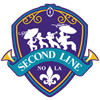

Game of the Week: New York Silverbacks at Orange County OttersOur Expert Predictions:
Jeremy Piper : New York Silverbacks
This is just going by my intuition. Replace the batteries in your remote. You do not want to miss this game.
Mary Moore : New York Silverbacks
When you think of the players that will be on the field, a good bet is that Leon McDavid (C) - DT is the guy to watch. This man is pivotal to the Silverbacks defense. A single digit win.
Jim Nox : New York Silverbacks
It may even be a blow out.
Darren Francis : Orange County Otters
Look for them to build on their last win.
Edd points fingers after Yeti loss. Big Edd blasted the effort of some teammates after the loss. 'These guys have to show up' he said. 'We all have to take responsibility and make sure we are prepared and some guys are letting the team down'. Big Edd - DT was clearly upset after the Yeti loss. 'We need to look at ourselves. If you are NationalSimulation FootballLeague (SS), can you look at your performance and be happy? This whole team needs to work harder. This whole team needs to decide what we want', the DT said. Big Edd blasted the effort of some teammates after the loss. 'These guys have to show up' he said. 'We all have to take responsibility and make sure we are prepared and some guys are letting the team down'. Big Edd - DT was clearly upset after the Yeti loss. 'We need to look at ourselves. If you are NationalSimulation FootballLeague (SS), can you look at your performance and be happy? This whole team needs to work harder. This whole team needs to decide what we want', the DT said.
Week 1: RB Raphtalia Chan (SAR) wins Offensive Player of the WeekThe honor comes after Chan's 23 att, 114 yds, 3 TD performance against the Colorado Yeti. Chan from UCF was selected in round 0, 7 years ago.
Chan now has 114 Rushing Yards and 3 Touchdowns for the season.Week 1: LB Juan Domine (CHI) wins Defensive Player of the WeekLB Domine absolutely dominated in the Butchers 26-20 game with the Yellowknife Wraiths. He finished with 9 Tck, 1 Sck, 1 Int, 1 FR.Game Recaps for Week 1Butchers - 26, Wraiths - 20
Sailfish - 33, Yeti - 27
Fire Salamanders - 38, Hawks - 3
Liberty - 26, Hahalua - 23
Silverbacks - 23, Secondline - 19
Otters - 20, Copperheads - 8
Sabercats - 23, Outlaws - 20Player Release The Yellowknife Wraiths have released Hugo Yates - RB. The Yellowknife Wraiths have released Hugo Yates - RB.
Player ReleaseThe Yellowknife Wraiths have released Robert Doolittle - CB.Player ReleaseThe Sarasota Sailfish have released Andrew White - RB.Player ReleaseThe Sarasota Sailfish have released Randy Frey - RB.Player ReleaseThe Sarasota Sailfish have released Clint Jordan - TE.Player ReleaseThe Sarasota Sailfish have released George Thomas - SS.Player Release The Philadelphia Liberty have released Ernest Mckinley - C. The Philadelphia Liberty have released Ernest Mckinley - C.
Player ReleaseThe Orange County Otters have released Roger Byrne - RB.Player Release The New York Silverbacks have released Frank Lindley - RB. The New York Silverbacks have released Frank Lindley - RB.
Player ReleaseThe New Orleans Secondline have released John Todd - RB.Player ReleaseThe New Orleans Secondline have released Humberto Tolbert - FB.Player ReleaseThe New Orleans Secondline have released Chester Tubbs - DT.Player Release The Honolulu Hahalua have released Victor Paradis - QB. The Honolulu Hahalua have released Victor Paradis - QB.
Player ReleaseThe Honolulu Hahalua have released Aaron Irby - RB.Player ReleaseThe Honolulu Hahalua have released Nicky Cunningham - T.Player ReleaseThe Colorado Yeti have released Jeffrey Roush - RB.Player ReleaseThe Chicago Butchers have released Francisco Dickson - RB.Player ReleaseThe Berlin Fire Salamanders have released Steve Knox - RB.Player Release The Austin Copperheads have released Elmer Castellano - RB. The Austin Copperheads have released Elmer Castellano - RB.
Player ReleaseThe Austin Copperheads have released Dirk Hornsby - G.Player ReleaseThe Austin Copperheads have released Glenn Quick - DT.Player ReleaseThe Austin Copperheads have released Barry Love - FS.Player ReleaseThe Austin Copperheads have released Steve Rangel - SS.Player ReleaseThe San Jose Sabercats have released Daniel Tejada - FB.Player ReleaseThe San Jose Sabercats have released Daniel Washington - DE.Season PredictionsThe sports journalists association has published the results of this year's division prediction polls among their twenty top sports journalists.
ASFC ASFC: Honolulu Hahalua with 9 votes (Runner up: Austin Copperheads with 7 votes)
NSFC NSFC: Yellowknife Wraiths with 9 votes (Runner up: Sarasota Sailfish with 8 votes)Game of the Week: Yellowknife Wraiths at Chicago ButchersOur Expert Predictions:
Jeremy Piper : Yellowknife Wraiths
This is a very good offense.
Mary Moore : Chicago Butchers
A tough choice. I think it will be a close game.
Jim Nox : Yellowknife Wraiths
Looking at the teams, I think that Robert Doolittle - CB has to potential to carry the Wraiths defense. A tough choice. I think it will be a close game.
Darren Francis : Yellowknife Wraiths
Looking at the two rosters, I think that the defense will struggle to counter Kent Copeland - QB. Watch out for him. This will really be a statement win.
CB Robert Moore (N/A) has retired!CB Robert Moore (61 ovr) has retired after failing to get signed in free agency.QB Kenneth Roy (N/A) has retired!QB Kenneth Roy (65 ovr) has retired after failing to get signed in free agency.K Bart Headrick (N/A) has retired!K Bart Headrick (54 ovr) has retired after failing to get signed in free agency.Post Free Agency RetirementsThe following players have retired after going unsigned through free agency:QB Clarence Reilly (Sal) goes #1 overall!NEW YORK -- The Salinas As drafted Clarence Reilly #1 overall in the 2042 draft. The 6' 2" QB fits the team's needs perfectly. Said As general manager: "It's up to us to develop him and get good players around him."
"The great thing about the game of football is, it's a team game," Reilly said on a conference call. "I'm just going to be one piece of the puzzle." |
| Powered by Draft Day Sports: Pro Football | http://www.wolverinestudios.com |
 Copperheads
Copperheads Hahalua
Hahalua Otters
Otters Outlaws
Outlaws Sabercats
Sabercats Secondline
Secondline Silverbacks
Silverbacks Butchers
Butchers Fire Salamanders
Fire Salamanders Hawks
Hawks Liberty
Liberty Sailfish
Sailfish Wraiths
Wraiths Yeti
Yeti